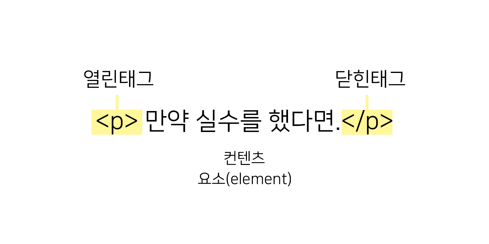
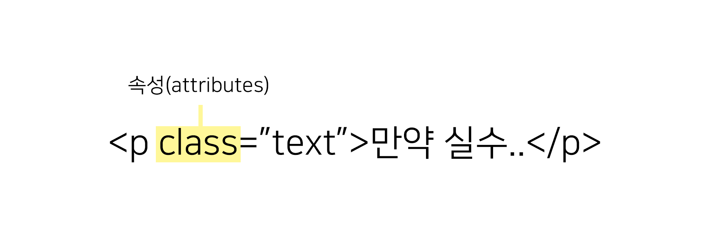

HTML
HTML(HyperText Markup Language)은 웹 문서를 표현하기 위한 하이퍼텍스트 마크업 언어입니다.
하이퍼텍스트란 문서에서 다른 문서로 이동하는 것을 말하며, 마크업이란 태그를 사용하여 콘텐츠의 의미를 부여하는 것을 말합니다.
HTML 은 Hyper Text Markup Language 약어로 HyperText(웹 페이지에서 다른 페이지로 이동할 수 있도록 하는 것) 기능을 가진 문서를 만드는 언어입니다. 다시 말해, 구조를 설계할 때 사용되는 언어로 hyper link 시스템을 가지고 있으며, 흔히 말하는 웹 페이지를 위한 마크업 언어라고 할 수 있습니다. 출처: https://webclub.tistory.com/608 [Web Club]
태그(tag)
태그는 HTML에서 정보를 전달하는 방식을 의미합니다.
- 열린 태그(Opening tag) : 이것은 요소의 이름과 열고 닫는 꺽쇠 괄호로 구성됩니다. 요소가 시작부터 효과가 적용되기 시작합니다.
- 닫는 태그(Closing tag) : 이것은 요소의 이름 앞에 슬래시(/)가 있는 것을 제외하면 열린 태그와 같습니다. 이것은 요소의 끝에 위치합니다. 닫는 태그를 적어주지 낳는 것은 흔한 초심자의 오류이며, 이것은 이상한 결과를 낳게됩니다.
- 내용(Contect) : 요소의 내용이며, 이 경우 단순한 텍스트 입니다.
- 요소(Element) : 여는 태그, 닫는 태그, 내용을 통틀어 요소(element)라고 합니다
속성
HTML 속성은 태그에 기본 기능 및 유형을 설정하고, 태그의 동작으로 제어하기 위한 용어입니다.
- 요소 이름 다음에 바로 오는 속성은 요소 이름과 속성 사이에 공백이 있어야 되고, 하나 이상의 속성들이 있는 경우엔 속성 사이에 공백이 있어야 합니다.
- 속성 이름 다음엔 등호(=)가 붙습니다.
- 속성 값은 열고 닫는 따옴표로 감싸야 합니다.
요소(Element)
요소는 HTML을 구성하는 가장 기본 단위입니다.
태그의 시작태그와 끝나는 태그 사이의 범위를 요소라고 합니다.
주석
주석표시는 프래그램에 영향을 미치지 않으며, 설명이나 메모를 목적으로 사용합니다.
<!-- 주석표시 -->;
블록요소 / 인라인요소
블록요소는 박스, 인라인요소는 텍스트를 의미합니다.
- 블록 엘리먼트(Block Element)
- 독립 된 박스 영역으로 한 줄에 하나에 블록 요소만 표현 할 수 있습니다.
- 블록 요소에는 블록 요소와 인라인 요소를 포함 할 수 있습니다.
- ex) <div>, <p>, <ul>, <li>, <hr>, <address>
- 인라인 엘리먼트 (Inline Element)
- 독립된 텍스트 영역으로 한 줄에 여러개의 인라인 요소를 표현할 수 있습니다.
- 인라인 요소에는 블록요소가 포함 될 수 없지만, 인라인 요스는 포함 할 수 있습니다
- ex) <span>, <a>, <img>, <input>, <button>, <br>
DTD 선언
웹 문서를 제작하기 위해서는 웹 문서 유형을 설정해야 합니다.
<!-- HTML 4.01 Strict -->
<!DOCTYPE HTML PUBLIC "-//W3C//DTD HTML 4.01//EN" "http://www.w3.org/TR/html4/strict.dtd">
<!-- HTML 4.01 Transitional -->
<!DOCTYPE HTML PUBLIC "-//W3C//DTD HTML 4.01 Transitional//EN" "http://www.w3.org/TR/html4/loose.dtd">
<!-- HTML 4.01 Frameset -->
<!DOCTYPE HTML PUBLIC "-//W3C//DTD HTML 4.01 Frameset//EN" "http://www.w3.org/TR/html4/frameset.dtd">
<!-- XHTML 1.0 Strict -->
<!DOCTYPE html PUBLIC "-//W3C//DTD XHTML 1.0 Strict//EN" "http://www.w3.org/TR/xhtml1/DTD/xhtml1-strict.dtd">
<!-- XHTML 1.0 Transitional -->
<!DOCTYPE html PUBLIC "-//W3C//DTD XHTML 1.0 Transitional//EN" "http://www.w3.org/TR/xhtml1/DTD/xhtml1-transitional.dtd">
<!-- XHTML 1.0 Frameset -->
<!DOCTYPE html PUBLIC "-//W3C//DTD XHTML 1.0 Frameset//EN" "http://www.w3.org/TR/xhtml1/DTD/xhtml1-frameset.dtd">
<!-- XHTML 1.1 -->
<!DOCTYPE html PUBLIC "-//W3C//DTD XHTML 1.1//EN" "http://www.w3.org/TR/xhtml11/DTD/xhtml11.dtd">
<!-- html5 -->
<!DOCTYPE html>
언어 속성 설정
콘텐츠의 언어를 인식하고 언어 정보를 추출하는데 사용합니다.
미리 언어를 설정하면 효율성이 더 좋아집니다.
<!-- HTML5 -->
<html lang="ko">
<-- HTML4 -->
<html xmlns="http://www.w3.org/1999/xhtml" xml:lang="en">
문서구조
html는 구조는 html 요소 안에 head와 body로
이루어져 있습니다
- HTML 구조는 독타입 선언을 해주어야 하나의 웹 문서가 완성됩니다.
- HTML 문서는 상하 관계가 존재하는 계층적인 구조로 되어있습니다. 상위에 있는 요소와 하위에 있는 하위에 있는 요소는 부모 자식 관계로 표현하며, 이러한 구조를 DOM 구조라고 합니다.
- HEAD 요소에는 제목, 사이트 정보, 스크립트, 스타일시트, 메타 정보등을 제공합니다.
- BODY 요소에는 문서 본문에 해당하는 콘텐츠가 영역입니다.
<!DOCTYPE html>
<html lang="ko">
<head>
</head>
<body>
</body>
</html>
<section>
section태그는 일반적으로 문서의 콘텐츠 영역을 설정할 때 사용합니다.
- 콘텐츠와 관련 된 한 가지 주제 영역을 의미합니다.
section요소는 문장이나 스타일링 요소가 아니기 때문에 편의나 영역을 위함이라면div태그가 좋습니다section요소는 제목이 없는 경우 섹션이라고 할 수 없기 때문에 제목을 제공해야 합니다.section요스는 일반적인 영역의 주제가 아니라면 구체적인 요소( article, aside, nav)를 대신 사용하는 것이 더 적절합니다.
<nav>
nav태그는 웹 페이지 내에서 이돌 할 수 있는 네비게이션 링크 그룹을 설정합니다.
nav는 문서의 핵심적인 페이지 메뉴 및 서브 메뉴에서 사용합니다nav요소는 문서에서 주로 한 번만 사용합니다.- 문서 안에 링크가 포함 된 콘텐츠는
nav를 사용하지 않습니다 nav는 핵심적인 네비게이션에 사용해야 하므로 푸터 내에 링크 그룹에 사용은 적절하지 않습니다.
<main>
main태그는 웹 문서에서 주요 콘텐츠 영역을 나타낼 때 사용합니다
main태그는 웹 페이지에서 한 번만 사용할 수 있으며, 접근성과 검색 영역 노출을 향상 시킵니다.article,aside,footer,nav의 하위 요소로 사용할 수 없습니다.
<aside>
aside태그는 메인 콘텐츠와 관련 된 사이트 콘텐츠 영역을 설정합니다.
aside는 메인 콘텐츠와 관련 된 사이드의 정보, 광고 등 부분적인 정보를 그룹화할 때 사용합니다.
<header>
header태그는 웹 문서의 헤더 영역을 설정합니다
header는 웹 페이지의 소개, 네비게이션 영역, 검색영역, 로고 영역을 포함하는 영역 입니다.header는 제목 태그가 포함 될 수 있으며, 필수 조건은 아닙니다.header는 섹션 콘텐츠가 아닌 그룹화하기 위한 요소이므로section요소를 포함 할 수 없습니다.
<footer>
footer태그는 웹 문서의 푸터 영역을 설정합니다.
footer태그는 저작권 정보, 회사 정보, 관련 링크, 바닥글, 주소 사이트 정보 등을 포함하는 콘텐츠 영역입니다.footer태그는 섹션 콘텐츠가 아닌 그룹을 나타내는 요소이며,seciton,article,aside태그를 포함 할 수 있습니다.
<article>
article태그는 웹 문서의 독립적인 항목을 나타내는 콘텐츠를 의미합니다..
article태그는 신문기사, 잡기, 블로그 항목, 게시판 글 등의 독립적인 항목을 나타냅니다.section태그는 하나의 주제를 나타낸다면,article는 주제를 묶은 독립적인 콘텐츠 입니다.section요소 안에는article요소를 쓸 수 있으며,article요소 안에도 code>section요소를 쓸 수 있습니다.
웹 표준과 웹 접근성
웹 접근성이란
- 웹 사이트에서 제공하는 정보를 차별 및 제한없이 동등하게 이용할 수 있도록 보장하는 것 신체적 조건 ex)장애인이나 환경적 조건 없이 이용할 수 있는 것
웹 표준이란
- 말 그대로 '웹에서 표준적으로 사용되는 기술이나 규칙'을 의미하며, 웹 사이트에 접속한 사용자는 어떠한 운영체제나 브라우저를 사용하더라도 웹페이지가 동일하게 보이고 정상적으로 작동해야 함을 의미한다.
시멘틱 태그
HTML5 에 컴퓨터가 정보를 이해하고, 논리적인 추론까지 할 수 있는 구조를 만들기 위해 추가된 태그.
- section
- 일반적으로 문서의 콘텐츠 섹션을 의미합니다.
- 콘텐츠와 관련된 한 가지 주제 영역을 말합니다.
- section 요소는 문장이나 문서의 스타일링 요소가 아니기때문에 편의나 영역을 위함이라면 div 요소가 좋습니다.
- section 요소는 제목이 없는 경우는 섹션이라고 할 수 없기 때문에 제목을 제공해야 합니다
- section 요소는 일반적인 주제가 아니라면 구체적인 요소(article, aside, nav)를 사용하는 것 더 적절합니다.
- article
- 콘텐츠의 독립적인 항목을 나타내는 콘텐츠를 의미합니다.
- article는 포럼, 신문기사, 잡지, 블러그 항목, 게시판 글 등 콘텐츠의 독립적인 항목을 나타냅니다.
- section은 하나의 주제를 나타낸다면, article은 주제를 묶은 독립적인 콘텐츠 입니다.
- section 요소 안에는 article요소를 쓸 수 있으면, article 요소 안에도 section요소를 쓸 수 있습니다.
- nav
- 페이지 내에서 이동할 수 있는 네비게이션 링크 그룹입니다.
- nav는 문서의 핵심적인 페이지의 메뉴 및 서브 메뉴에서 사용하고, 문서에서 주로 한 번만 사용합니다.
- 문서안에 링크가 포함된 콘텐츠는 nav를 사용하지 않습니다.
- nav는 핵심적인 네비게이션에 사용해야 하므로 footer 내에 링크 그룹의 사용은 적절하지 않습니다.
- main
- 웹 문서의 주요 콘텐츠 영역을 나타낼 때 사용합니다.
- main은 웹 페이지내에서 한 번만 사용할 수 있으며, 접근성과 검색영역에 노출을 향상시킵니다.
- article, aside, footer, header, nav를 하위 요소로 사용할 수 있습니다.
- aside
- 웹 문서의 메인 콘텐츠와 관련된 사이드 컨텐츠 영역을 나타냅니다.
- aside는 메인 콘텐츠와 관련된 사이드의 정보, 광고 등 부분적인 정보를 그룹화 할 때 사용합니다.
- header
- 웹 문서의 헤더 영역을 나타냅니다.
- header는 웹 페이지에 대한 소개, 네비게이션 영역, 테이블 영역, 검색 영역, 로고 영역을 포함한 영역입니다.
- header는 제목 태그가 포함 될 수 있으며, 필수 조건은 아닙니다.
- header는 섹션 컨텐츠가 아닌 그룹화하기 위한 요소이므로 section 요소를 포함 할 수 없습니다.
- footer
- 웹 문서의 footer영역을 나타냅니다.
- footer는 저작권 정보, 회사정보, 관련 링크, 주소, 바닥글, 사이트 정보등을 포함하는 콘텐츠 영역입니다.
- footer는 섹션 컨텐츠가 아닌 그룹을 나타내는 요소이며, section, article, aside 등에도 포함 될 수 있습니다.
HTML5에 새로 생긴 것(의미 변경 된 것)
| 속성명 | 속성기능 |
|---|---|
| value | 실제로 측정된 진짜 데이터를 지정한다. |
| title | 튤팁 입력을 할 수 있다. |
| high | 입력된 데이터들 중의 사용자가 허용할 수 있는 최대값을 지정한다. |
| low | 입력된 데이터들 중의 사용자가 허용할 수 있는 최저값을 지정한다. |
| max | meter에서 인식할 수 있는 최고 값을 지정한다. |
| min | meter에서 인식할 수 있는 최저값을 지정한다. |
| optimum | 최적의 측정값을 지정해 준다.min으로 설정된 최저값과 max로 설정된 최대값 사이에서 가능한 한 최고 적합한 값을 지정해준다. |
- dialog
- 대화를 의미있는 콘텐츠로 만들고자 할때 사용하며 dt에 말하는 사람 dd에 내용을 작성한다.
- figure
- 이미지, 그래프, 사진, 예제코드, 비디오, 일반 텍스트등을 하나로 묶어 블록을 형성하고 캡션을 포함 시켜 서로의 관계를 명확히 구조화 시킨다.
- 반드시 메인이 되는 문서 안에 삽입 될 필요는 없으며 페이지 옆이나 참조용 별도 페이지등에 넣어도 크게 상관없는 내용을 지정할 수 있다.
- mark
- 형광펜으로 특정단어들을 칠해서 강조하는 효과와 비슷하며 문장내의 중요한 부분에 강조효과를 넣는 em, strong과는 다른 개념이다. 시각적 주목효과만을 노리며 스타일이 정의되어 있지 않으므로 직접 효과를 작성한다.
- time
- 날짜와 시간을 기계가 이해할 수 있게 명확하게 인코딩하면서도 사람도 이해할 수 있게 노출시킨다. YYYY-MM-DD(날짜) / HH:MM:SS(24시의 형태)로 표기하고 동시에 나타낼 경우, 2013-01-30T12:00:00+09:00 와 같이 T문자로 구분하고 문자열 끝에 타임존 정보를 더하면 된다.
- meter
- progress
- 다운로드 진척 상태를 알려줄때 유용하게 사용할 수 있는 태그로 최대값 max속성과 현재 다운로드한 값 value속성을 가진다. 이는 자바스크립트와 연동하여 동적으로 다운로드상태를 제공할 수 있다.
- ruby
- 한자, 일어등의 발음들을 표기하기 위해 사용하며 rp와 rt를 사용한다. 5.5pt의 작은 글씨를 사용해 첨언을 넣는 영국출판문화에서 기원한 단어
- rp는 루비의 앞뒤로 붙게되는 괄호등을 지정하고 지원 브라우저에서는 보이지 않는다.
통화, 인구, 점수, 치수와 같은 숫자들과 같이 특정 범위내에 있는 숫자 값을 시스템에 인지시킬 필요가 있을 때 사용할 수 있다.
%나 '분수'형태로도 사용할 수 있다.
HTML5에 의미가 변한 속성
- HTML5의 DTD 선언 : !DOCTYPE html
- HTML5의 인코딩 선언 : meta charset="utf-8"
hr- 원래 단순한 가로줄을 나타내는 태그 였으나, 페이지의 주제가 바뀔 때 내용을 분리시키는 의미가 HTML5에서 추가되었다.u- 양식상 일반적인 텍스트보다 돋보여야 할 때 쓴다. 예를 들어 철자가 틀린 단어나, 중국어로 번역된 고유 명사등이 있다. 별도의 CSS없이 쓰면 브라우저에서는 밑줄을 긋는 것이 기본값이다.i-어떠한 이유로 일반적인 텍스트보다 돋보여야 할 때 쓴다. 예를 들어 전문 용어, 외국어의 구절등이 있다. 별도의 CSS없이 쓰면 브라우저에서는 이태릭체로 표기하는 것이 기본 값이다.s- 더이상 옳지 않은 내용을 나타내는 데에 쓴다. 별도의 CSS없이 쓰면 브라우저에서는 취소선을 긋는 것이 기본값이다. 더 적절한 시맨틱 태그가 있을 경우 그쪽을 쓴다.strong: HTML4에서는 강한 강조를 의미했지만, HTML5에서는 중요성으로 의미가 변경되었다.b: 인쇄상 강조 표현을 가진 텍스트 뿐만 아니라 제품 소개 내 제품명, 문서 키워드 같은 아주 특별한 중요도는 갖지 않으나 일반적인 강조의 목적에 사용함.a: href 속성이 없는 a 요소는 플레이스 홀더로, 어떤 이유로 하어퍼링크를 붙이지 않는 텍스트로 이용할 수 있음.cite: 인용문의 제목만 나타냄. 작성자나 인용문에는 사용할 수 없음address:article요소 안에 있는 경우article의 문서에 대한 연락처를 나타냄. body 요소 안에 있는 경우는 문서에 대한 연락처를 나타냄- dl : 기술 리스트(Definition List)를 나타냄. 정의를 나타내려면
dfn태그를 함께 사용해야 함.
HTML5에 없어진 것
basefont: 문서의 기본 폰트 사이즈를 지정big: 텍스트의 크기를 키운다.center: <center>안의 모든 요소는 <center>를 감싸고 있는 요소(대개 body 요소)에 대해서 중앙으로 수평정렬됩니다.font: 콘텐츠에 대한 글꼴 크기, 색상, 글꼴을 정의합니다.s: 텍스트의 가운데에 줄을 그어 준다.strike: 텍스트 가운데에 줄을 그을 때 사용 됨.tt: 브라우저의 고정폭폰트로 표시할 때 사용 됨.u: 요소는 내용 밑에 밑줄을 긋는다.frame: <frameset> 요소에 포함되는 하나의 프레임(frame)을 정의할 때 사용합니다.framesets: 요소에 포함된 각각의 <frame> 요소는 테두리(border)나 스크롤, 크기 재조정 가능 여부 등 서로 다른 속성값을 가질 수 있습니다.noframes: 프레임(frame) 기능을 사용하지 않도록 설정했거나, 프레임 기능을 지원하지 않는 브라우저를 위한 별도의 콘텐츠를 정의할 때 사용합니다.acronym: 요소는 웹 저작자가 명확하게 약자의 원래 표현의 약자를 표시하려고 할 때 사용한다.applet: HTML 애플릿 요소인 <applet> 는 자바 애플릿을 포함을 나타내는 요소isindex: 쿼리문서에서 문서에 대한 텍스트 필드를 두기 위해 사용dir: 파일 디렉토리를 표현합니다. 즉, 파일 이름들의 모음
html5shiv
HTML5의 Element를 HTML5를 지원하지 않는 IE 9 이하 하위 버전 등에서 사용할 수 있도록 해 주는 Javascript 라이브러리이다.
<div>
div 태그는 문서의 섹션을 만들거나 영역을 만들 때 사용합니다
DTD (Document Type Declaration)을 성정하지 않거나 잘못 설정하면 브라우저에 따라 화면이 다르게나오거나 랜더링이 달라지기 때문에 독타입을 설정해야 합니다.
<p>
p 태그는 문단을 쓸 때 사용합니다.
- p태그와 p태그 사이에는 한 줄의 행간이 표현됩니다.
<ul>
ul 태그는순서가 없는 목록을 쓴 때 사용합니다
- ul태그는 li태그와 같이 사용합니다.
- 블릿기호는 점으로 표현됩니다.
| 태그 | 설명 |
|---|---|
| <li> | li 태그는 목록의 항목을 쓸 때 사용합니다. li 태그는 ul 태그, ol 태그, menu 태그와 같이 사용 됩니다 li 태그는 안에는 다른 목록을 중첩(2중)으로 사용할 수 있습니다 |
| <ol> | ol 태그는순서가 있는 목록을 쓸 때 사용합니다 ol태그는 li태그와 같이 사용합니다. 블릿기호는 번호(숫자)로 표현됩니다. |
<dl>
설명 목록을 나타냅니다 <dt>로 표기한 용어와
<dd> 요소로 표기한 설명 그룹의 목록을 감싸서 설명 목록을 생성합니다.
| 태그 | 설명 |
|---|---|
| <dt> | 설명 혹은 정의 리스트에서 용어를 나타냅니다. |
| <dd> | 정의 목록 요소 <dl> 에서 앞선 용어 <dt> 에 대한 설명, 정의, 또는 값을 제공합니다. |
<a>
a 태그는 하이퍼 링크를 설정합니다
- 하이퍼 링크란 현재 페이지에서 다른 페이지 이동을 말합니다.
- 방문하지 않은 링크는 밑줄과 파란색으로 표현됩니다.
- 방문한 링크는 밑줄과 보란색으로 표현됩니다.
- 활성화 된 링크는 밑줄과 빨간색으로 표현됩니다.
- HTML5에서는 예외적으로 인라인 구조인 a 태그에 블록 요소를 포함할 수 있습니다.
<title>
태그는 웹 페이지의 제목을 나타내는 태그입니다.웹페이지 본문에는 보이지 않으며, 브라우저의 탭 등에서 확인 할 수 있습니다.
<meta>
meta 태그는 웹 문서에대한 여러가지 정보를 제공합니다.
| 메타데이터 | 설명 |
|---|---|
| charset | 웹 페이지 언어를 설정합니다. |
| author | 웹 페이지를 만든 사람을 설정합니다. |
| description | 웹 페이지에 대한 설명을 설정합니다 |
| keyword | 웹 페이지에 대한 키워드를 설정합니다 |
| application-name | 웹 페이지에 관련 된 응용프로그램 이름을 설정합니다 |
| generator | 웹 페이지에서 만든 소포트웨어의 이름 설정합니다. |
| viewport | pc화면비율을 모바일에 맞게 맞춰주는 매타태그 |
<!-- HTML5 언어 설정 -->
<meta charset="UTF-8">
<!-- HTML4 언어 설정 -->
<meta http-equiv="Content-Type" content="text/html;charset=UTF-8">
<!-- 웹 문서에 대한 제작자 설정 -->
<meta name="author" content="webstoryboy">
<!-- 웹 문서에 대한 설명 -->
<meta name="description" content="이 사이트는 무슨무슨 사이트입니다.">
<!-- 웹 문서에 대한 키워드 설정 -->
<meta name="keyword" content="키워드, 키워드, 키워드">
<!-- 웹 문서에 대한 웹 응용 프로그램 이름 -->
<meta name="application-name" content="응용 프로그램 이름">
<!-- 웹 문서에 대한 소프트웨어 이름 -->
<meta name="generator" content="소프트웨어 이름">
<!-- pc화면비율을 모바일에 맞게 맞춰주는 매타태그 -->
<meta name="viewport" content="키워드, 키워드, 키워드">
<table>
태그는 HTML 문서에서 표를 만드는 태그입니다.행과 열을 표현하기 위해 <tr>, <td>등의 태그와 함께 작성하게 됩니다.
| 태그 | 설명 |
|---|---|
| <tr> | table row 약자로 표의 제목을 쓰는 역할 |
| <td> | table row 약자로, 가로줄을 만드는 역할 |
| <tbody> | table data 약자로, 셀을 만드는 역할 : 테이블 내용 |
| <thead> | 테이블 제목 |
| <tfoot> | 끝에 오는 내용 |
| <caption> | 요소는 표의 설명 또는 제목을 나타냅니다. |
| <col> | 표의 열을 나타내며, 열에 속하는 칸에 공통된 의미를 부여할 때 사용합니다. |
| <colgroup> | 요소는 표의 열을 묶는 그룹을 정의합니다. |
| <colspan> | 가로로 표의 열을 묶는 태그 |
| <rowspan> | 세로로 표의 열을 묶는 태그 |
<h1~h6>
요소는 6단계의 구획 제목을 나타냄. <h1>이 가장 높고 <h6>은 가장 낮습니다.
<br>
텍스트 안에 줄바꿈을 해주는 태그
<hr>
문서의 주제를 분리할 때 사용합니다.
<em> 과 <strong>의 차이
<em> = 텍스트만 강조
<strong> = 의미까지 강조
<span>
구문 콘텐츠를 위한 통용 인라인 컨테이너로, 본질적으로는 아무것도 나타내지 않는다.
<div> 태그도 마찬가지
<address>
HTML 문서에서 주소를 입력하는 방법입니다. 그냥 <p>태그를 사용해서 작성하셔도 되지만, 굳이 address 태그를 사용하는 이유는 검색엔진 때문.
<form>
정보를 제출하기 위한 대화형 컨트롤을 포함하는 문서 구획을 나타냅니다.
| 속성 | 설명 |
|---|---|
| accept-charset | 폼 데이터(form data)를 서버로 보낼 때 사용되는 문자 인코딩(character encoding) 방식을 명시합니다. |
| action | 폼 데이터(form data)를 서버로 보낼 때 해당 데이터가 도착할 URL을 명시합니다. |
| autocapitalize | 양식 요소 내에서 영문을 입력할 때 자동으로 대문자 변환하는 방식. |
| autocomplete | 요소에서 자동 완성 기능을 사용할지 여부를 명시합니다. |
| enctype | 폼 데이터(form data)가 서버로 제출될 때 해당 데이터가 인코딩되는 방법을 명시합니다. |
| method | 폼 데이터(form data)가 서버로 제출될 때 사용되는 HTTP 메소드를 명시합니다. |
| name | 해당 버튼의 이름(name)을 명시합니다. |
| novalidate | 지정한 경우 양식의 유효성 검증을 건너뜁니다. novalidate 특성을 지정하지 않은(양식의 검증을 수행하는)
경우에<button>, <input type="submit">,
<input type="image"> 요소의 formnovalidate 특성으로 재정의할 수 있습니다. |
| target | 양식 제출의 결과를 표시할 위치를 나타내는 표준 키워드 혹은 사용자 지정 이름 |
<fieldset>
웹 양식의 여러 컨트롤과 레이블 <label> 을 묶을 때 사용합니다.
disabled: 지정한 경우, 모든 자손 컨트롤을 비활성화합니다. 비활성 컨트롤은 편집할 수 없고,form을 제출할 때 데이터에 포함되지 않습니다. 마우스 클릭, 포커스 등 브라우저 이벤트도 모두 받지 않습니다. 브라우저는 비활성 컨트롤을 주로 회색으로 표시합니다. 단,legend안의 양식 요소는 비활성 상태로 전환되지 않습니다.form:fieldset요소와 연결할form요소("양식 소유자")의 id.fieldset이 해당form안에 위치하지 않아도 연결할 수 있습니다.
<legend>
부모 <fieldset> 콘텐츠의 설명을 나타냅니다
<input>
사용자에게 입력을 받을 수 있는 필드를 생성하는 것 따로 마감 </input> 태그가 없음입력 유형과 특성의 다양한 조합 가능성으로 인해, <input> 요소는 HTML에서 제일 강력하고 복잡한 요소 중 하나입니다.
| 속성 | 설명 |
|---|---|
| text | 기본 텍스트를 입력하는 창 |
| password | 비밀번호를 입력하는 창 생성 |
| button | 기본 버튼 생성 |
| raido | 라디오버튼 생성 |
| checkbox | 체크박스 생성 |
| file | 파일 선택하는 버튼 생성 |
| image | 이미지를 버튼처럼 사용 |
| hidden | 사용자에게 입력받지 않고 기본으로 설정 된 값을 서버로 전송 |
| submit | 서버로 제출하는 버튼 생성 |
| reset | form 에서 입력한 input 값들을 reset 시킴 |
| color | 색을 지정할 수 있는 컨트롤. 브라우저가 지원하는 경우, 활성화 시 색상 선택기를 열어줍니다 |
| date | 날짜를 선택할 수 있는 입력 필드를 정의합니다. |
| datetime-local | 날짜와 시간을 선택할 수 있는 입력 필드를 정의합니다. |
| 이메일 주소를 입력할 수 있는 입력 필드를 정의합니다. | |
| month | 날짜를 선택할 수 있는 입력 필드를 정의합니다. |
| number | 숫자를 입력할 수 있는 입력 필드를 정의합니다. |
| range | 슬라이드 바를 조정하여 범위 내의 숫자를 선택할 수 있는 입력 필드를 정의합니다. |
| search | 검색어를 입력할 수 있는 텍스트 필드를 정의합니다. |
| tel | 전화번호를 입력할 수 있는 입력 필드를 정의합니다. |
| time | 간을 선택할 수 있는 입력 필드를 정의합니다. |
| url | URL 주소를 입력할 수 있는 입력 필드를 정의합니다. |
| week | 날짜를 선택할 수 있는 입력 필드를 정의합니다. |
<label>
사용자 인터페이스 항목의 설명을 나타냄
<button>
클릭 가능한 버튼을 나타냅니다. 버튼은 양식 내부는 물론 간단한 표준 버튼 기능이 필요한 곳이라면 문서 어디에나 배치할 수 있습니다. 기본값의 HTML 버튼은 사용자 에이전트의 호스트 플랫폼과 비슷한 디자인을 따라가지만, 외형은 CSS로 변경할 수 있습니다.
| 속성 | 설명 |
|---|---|
| autofocus | 페이지가 로드될 때 자동으로 포커스가 버튼으로 이동됨을 명시합니다. |
| disabled | 해당 버튼이 비활성화됨을 명시합니다. |
| form | 해당 버튼이 포함되는 하나 또는 그 이상의 <form> 요소를 명시합니다. |
| formaction | 폼 데이터(form data)가 서버로 제출될 때 해당 데이터가 도착할 URL을 명시합니다. |
| formenctype | 속성은 폼 데이터(form data)가 서버로 제출될 때 해당 데이터가 인코딩(encoding)되는 방식을 명시합니다. |
| formmethod | 서버로 제출될 때 사용할 HTTP 메소드를 명시합니다. |
| formnovalidate | 폼 데이터(form data)를 서버로 제출할 때 해당 데이터의 유효성을 검사하지 않음을 명시합니다. |
| formtarget | 폼 데이터(form data)가 서버로 제출된 후 받은 응답(response) 데이터를 어디에 표시할 지를 명시합니다. |
| name | 해당 버튼의 이름(name)을 명시합니다. |
| type | 해당 버튼의 타입(type)을 명시합니다. |
| value | 해당 버튼의 초깃값(initial value)를 명시합니다. |
조건식 주석
조건부 주석은 IE10 미만에서만 작동하는 조건문으로, 이를 이용하여 IE 브라우저별로 어떤 기능이나 파일, 디자인등을 삽입하는 용도로 자주 사용된다.
조건부 주석 기본 문법
조건부 주석은 IE10 미만에서만 작동하는 조건문으로, 이를 이용하여 IE 브라우저별로 어떤 기능이나 파일, 디자인등을 삽입하는 용도로 자주 사용된다.
<!--[if condition]>
HTML 코드를
<![endif]-->
조건부 사용되는 기호는 :
!: 아니다(not) - 예)[if !ie]ie가 아니라면lt: 작다(less than) - 예)[if lt ie 9]ie9 보다 작다면lte: 작거나 같다(less than equal) - 예)[if lte ie 8]ie8 보다 작거나 같다면gt: 크다(greater than) - 예)[if gt ie 6]ie6 보다 크다면gte: 크거나 같다(greater than equal) - 예)[if gte ie 7]ie7 보다 크거나 같다(): 우선처리&: 그리고(and) - 예)[if (gte ie 7)&(lt ie 9)]ie7 이상이고 ie9 미만이라면|: 또는(or) - 예)[if (ie 7)|(ie 8)]ie7 이거나 ie8 이라면
<i>
텍스트에서 어떤 이유로 주위와 구분해야 하는 부분을 나타냅니다. 기술 용어, 외국어 구절, 등장인물의 생각 등을 예시로 들 수 있습니다. 보통 기울임꼴로 표시합니다.
i요소가 글자를 기울이기는 하지만, 기울임꼴을 적용하기 위한 용도로 사용해서는 안됩니다. CSS font-style 속성을 사용하세요.
<figure>
독립적인 콘텐츠를 표현합니다. < figcaption >요소를 사용해 설명을 붙일 수 있습니다. 피규어, 설명, 콘텐츠는 하나의 단위로 참조됩니다.
- 보통
figure는 주 문서 플로우가 참조하지만, 다른 부분이나 부록으로 이동해도 문제 없는 이미지, 삽화, 도표, 코드 조각 등을 맡습니다. - <figure>는 구획 루트이므로
figure요소의 콘텐츠는 문서의 주 개요에서 제외됩니다. - 안에 (처음이나 마지막 자식으로)
figcaption을 넣어서 설명을 덧붙일 수 있습니다. 제일 처음figcaption을 설명으로 사용합니다.
<figcaption>
부모 <figure> 요소가 포함하는 다른 콘텐츠에 대한 설명 혹은 범례를 나타냅니다.
- 안에 (처음이나 마지막 자식으로) <figcaption>을 넣어서 설명을 덧붙일 수 있습니다. 제일 처음 <figcaption>을 설명으로 사용합니다.
<video>
비디오 플레이백을 지원하는 미디어 플레이어를 문서에 삽입합니다. 오디오 콘텐츠에도 사용할 수 있으나, <audio> 요소가 사용자 경험에 좀 더 적합합니다
| 속성명 | 속성기능 |
|---|---|
| autoplay | 자동으로 재생 |
| buffered | 어느 시간대가 버퍼에 들어 있는지 확인할 수 있는 속성 |
| controls | 소리 / 동영상 탐색 / 일시 정지 / 재시작 / 을 할 수 있는 컨트롤러를 제공합니다. |
| loop | 동영상 재생이 마친 후 자동으로 처음으로 돌아감 |
| muted | 설정하면 오디오가 나오지 않습니다. |
| played | 재생된 동영상 영역을 나타내는 TimeRanges 객체 입니다 |
| preload | 가장 좋은 사용자 경험이 어떠한 것인지 브라우저에 미리 정보를 알려주는 용도록 사용됩니다 [ none / metadata / auto ] |
| poster | 출력되는 포스터 프레임 주소 |
| src | 삽입(embed)할 동영상의 주소(url)입니다. |